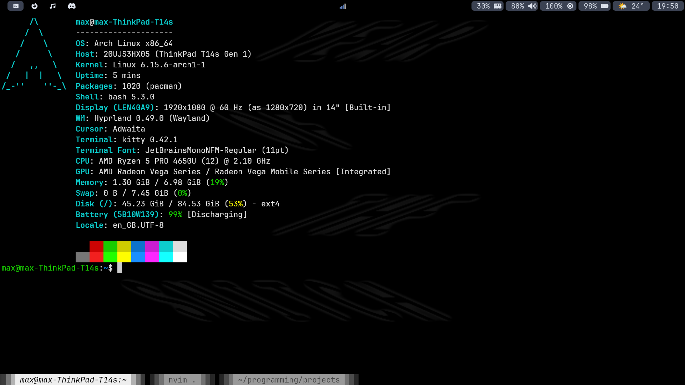
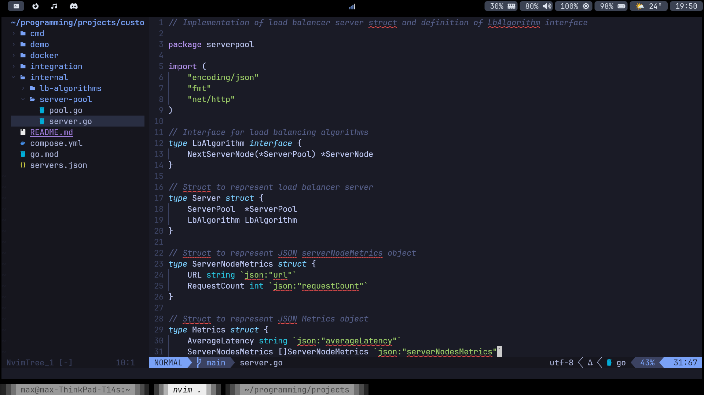
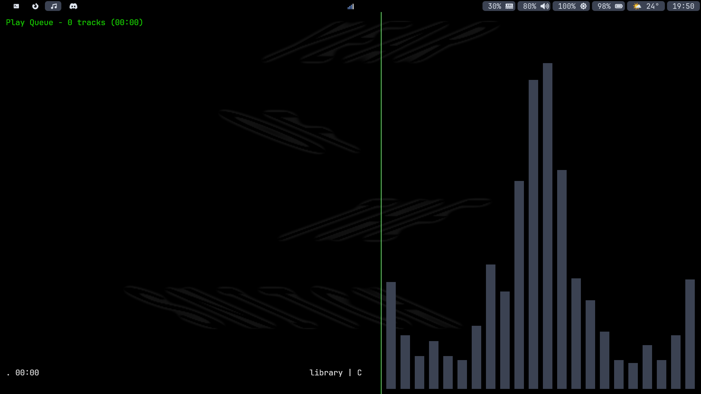
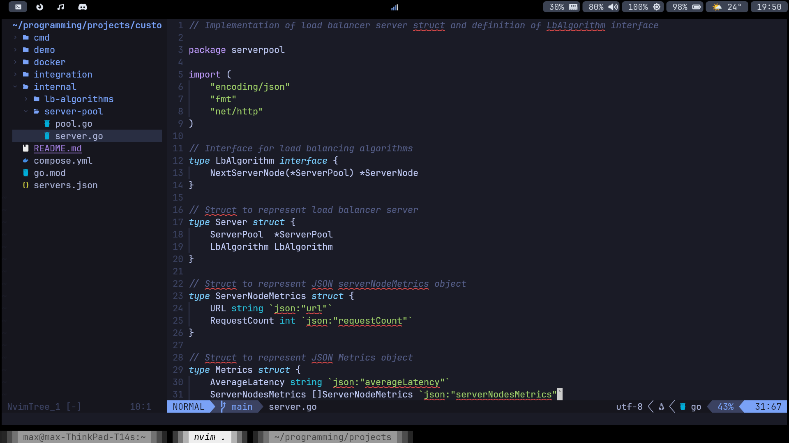
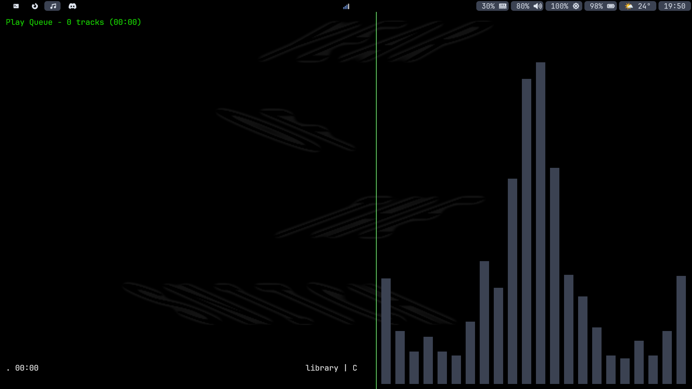

root@portfolio
:
~/Extra/My Dotfiles
$ cat README
My Dotfiles

 
 
- These are my Hyprland and Neovim configuration files.
- I also created a Bash script to setup the configuration on Arch Linux installations.
- GitHub Repository: github.com/max-cotton/dotfiles
root@portfolio
:
~/Projects/My Dotfiles
$
|